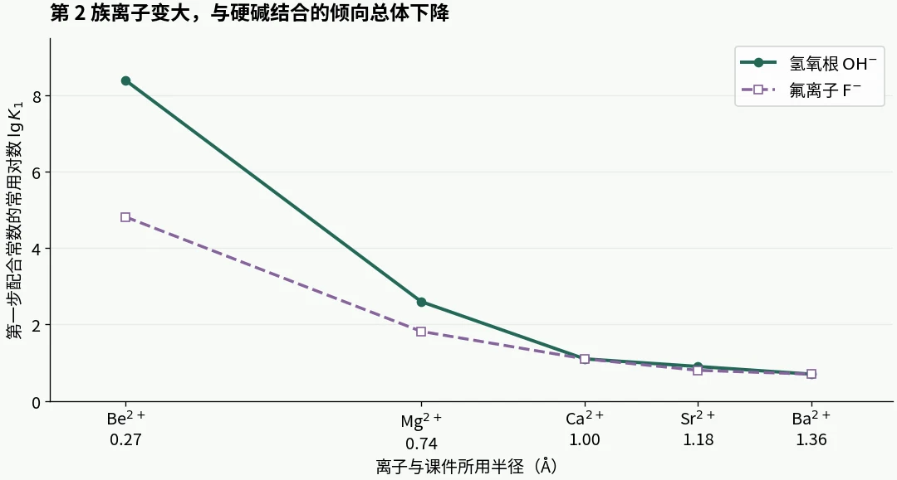
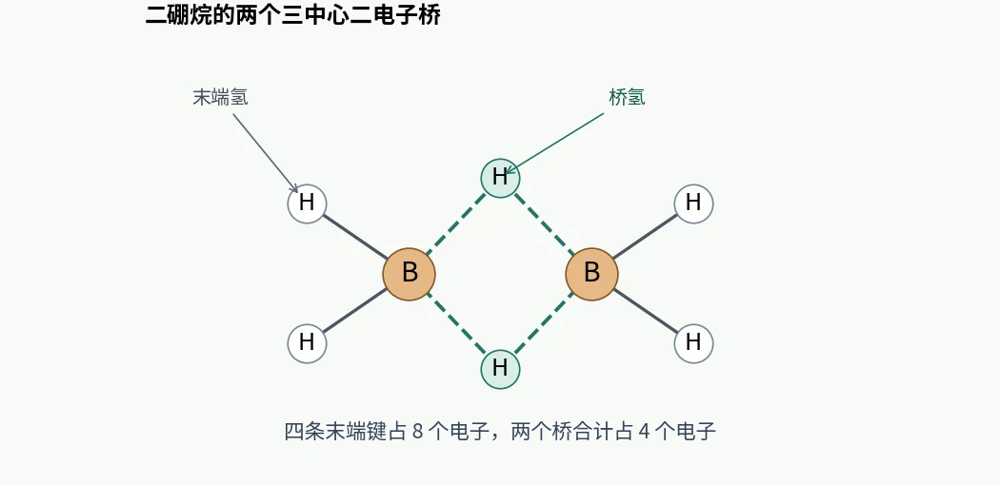

LECTURE 08 · MAIN GROUP CHEMISTRY
主族元素化学
用周期趋势理解配合、特殊成键和主族材料
8.1 · COURSE NOTES
从价电子读周期趋势
主族元素的价电子主要在 s、p 轨道。同族元素的价电子排布相似，因此常形成相同计量类型的化合物。例如第 1 族常形成一价阳离子，第 17 族常形成一价阴离子。沿周期从左向右，有效核电荷总体增加，原子半径倾向于缩小，第一电离能和电负性通常升高。沿同族向下，价电子层数增加，原子更容易被极化。
两个电离能例外值得从轨道上推一遍。Be 是 2s2，B 的第一个被移走的电子在能量较高的 2p 轨道，所以 B 的第一电离能较低。N 是 2p3，三个 p 轨道各占一个电子。O 的 2p4 已出现成对电子，移走其中一个可以减轻排斥，因此 O 的第一电离能低于 N。
从固体结构看，金属的离域电子可随外电场移动。许多分子型非金属固体缺少可移动载流子，类金属的能带结构则常允许半导体行为。石墨的层内离域 π 电子提供一个有代表性的导电非金属例子。
来源：08 Chemistry of the Main Group Elements(1).pdf，PDF 第 2–4 页。
8.2 · COURSE NOTES
第二周期的例外与对角线相似
Li 到 Ne 的价电子处在紧凑的第二层。小尺寸使同样的电荷集中在更小区域，也让相邻原子的 2p 轨道容易侧向重叠。于是 C=C、C≡C 普遍，N≡N 很强，较重的硅和磷要形成稳定多重键往往更依赖取代基和结构。另一方面，F2 的两个氟原子彼此很近，孤对电子排斥削弱了 F–F 键。
对角线关系来自若干周期趋势的抵消。向右走通常增大电负性，向下走通常减小电负性，因此 B、Si 等沿对角线可有接近的电负性。LiF 和 MgF2 都属于较难溶的氟化物，可作为 Li 与 Mg 相似性的切入点。具体溶解度还取决于晶格与水合的能量差。
HF 在水中是弱酸，而 HCl、HBr、HI 是强酸。比较这一组时，需把断开 H–X 键及生成水合离子的总自由能一起考虑。短而强的 H–F 键使 HF 与同族重元素的氢化物明显不同。
来源：08 Chemistry of the Main Group Elements(1).pdf，PDF 第 3–5、55 页。
8.3 · COURSE NOTES
硬软酸碱与逐级配合常数
按 Pearson 的硬软酸碱模型（HSAB），硬酸通常尺寸小、电荷密度高、电子云较难极化。F−、OH− 等硬碱与硬酸结合时，静电作用往往突出。I−、硫醚等软碱的电子云较易变形，与 Hg2+、Ag+ 等软酸形成的配合物常有较强共价成分。分类应针对具体价态和供体。
把电荷固定为 +2，再比较第 2 族离子，Be2+ 半径最小，与 OH− 的 lg K1 为 8.4，Ba2+ 则为 0.7。改用半径接近的 Li+、Mg2+、In3+、Zr4+ 比较，课件给出的 OH− 配合常数随电荷增加而上升。两组对照分别突出半径和电荷的作用。

| 比较项目 | Ca2+ | Hg2+ |
|---|---|---|
| 课件所用离子半径 | 1.00 Å | 1.03 Å |
| 与 F− 的 lg K1 | 1.1 | 1.5 |
| 与 I− 的 lg K1 | 小于 0 | 13.5 |
Ca2+ 与 Hg2+ 的半径、电荷接近，却对 I− 表现出很不一样的亲和力。这个对照说明，预测软酸的配合行为还要考虑极化和共价作用。
来源：08 Chemistry of the Main Group Elements(1).pdf，PDF 第 5–8 页。
8.4 · COURSE NOTES
配位数与水合结构
配位数数的是直接与中心连接的供体原子。较大的金属离子通常容得下更多供体，但配体的体积、电荷及配位方式也会影响几何。第 2 族水合离子是容易比较的一组，从四配位的 Be2+、六配位的 Mg2+，到 Ca2+ 的六或七配位，课件还列出 Sr2+ 八配位与 Ba2+ 九配位的代表结构。
Be2+ 虽然在族内尺寸最小，因电荷集中而具有很强的极化能力，许多铍化合物有明显的共价性。结合强度和配位数应分别判断。前者问每个供体与金属的相互作用，后者问中心周围能排下多少供体。
来源：08 Chemistry of the Main Group Elements(1).pdf，PDF 第 7–9、27 页。
8.5 · COURSE NOTES
惰性电子对与重元素的低氧化态
对较重的 p 区元素，价层 ns2 电子在某些成键环境中较难参与氧化或成键，较低氧化态随之变得有利。典型例子是第 13 族的 Tl(I)、第 14 族的 Pb(II) 和第 15 族的 Bi(III)，分别比族内常见的最高氧化态低二。Sn(II) 与 Sn(IV) 都常见，Pb(IV) 和 Bi(V) 则可在合适配体或晶格中得到稳定。
课件用 Au 的 6s 轨道说明重原子中的相对论效应。相对论性的轨道收缩和能量降低可使重元素的 ns 电子更难参与某些反应。氧化态的实际稳定性还取决于生成的键、配体和介质。
惰性电子对有时表现出立体化学活性。观察 [SnCl3]− 或 [Pb(C6H5)3]− 时，三个配体主要分布在中心的一侧。用三角锥及其开放方向描述这种几何，可将电子构型和结构图联系起来。
来源：08 Chemistry of the Main Group Elements(1).pdf，PDF 第 10–12、30、34–35 页。
8.6 · COURSE NOTES
氢的三种成键角色
氢只有 1s 价层，原子态排布为 1s1。它可与非金属形成共价键，在质子转移中表现为 H+，也可在盐型氢化物中用 H− 表示。氕、氘、氚的区别是中子数分别为零、一、二。氘可用于氘代溶剂和同位素效应研究，氚具有放射性。
| 形式 | 典型结构或反应 | 理解方式 |
|---|---|---|
| 质子水合 | H3O+、H5O2+ 等 | 水的氧供给电子对，质子与周围水分子动态交换 |
| 盐型氢化物 | NaH、CaH2 | H− 接受质子形成 H2，原有水分子留下 OH− |
| 共价或配位氢 | 桥联氢、金属氢化物 | H 可与多个中心共享成键电子，也可直接与金属配位 |
在 H5O2+ 的示意结构中，两个水分子共享一个质子。普通氢键可写成 D–H···A，D 是供体一侧的原子，A 是受体。F、O、N 经常参与氢键，键长、方向以及局部化学环境共同影响作用强弱。
来源：08 Chemistry of the Main Group Elements(1).pdf，PDF 第 13–17 页。
8.7 · COURSE NOTES
碱金属、冠醚与穴醚的尺寸选择
碱金属失去一个 ns 电子后形成 M+，标准还原电势通常很负。与水反应生成氢氧化物和氢气，配平时两个金属原子共给出两个电子。第 1 族离子的尺寸从 Li+ 到 Cs+ 增大，周围可容纳的供体数通常也增加。
冠醚是大环聚醚，名称的两个数字分别表示环原子总数与环中氧原子数。18-冠-6 有 18 个环原子和 6 个氧供体。课件的水溶液曲线在 K+ 处出现峰值。K+ 与空腔大小适配，同时能够接触多个氧。配合的净自由能也受离子脱溶剂和大环构象变化影响。
穴醚 cryptand 用三条桥构成立体空腔，能够从更多方向包围离子。课件给出 K+ 与 18-冠-6 的 lg K1 约为 2.05，与 [2.2.2] 穴醚的值为 5.5。把冠醚嵌入石墨烯或用它包裹反离子，都是利用局部供体排列控制离子结合的思路。
来源：08 Chemistry of the Main Group Elements(1).pdf，PDF 第 17–22、25、27 页。
8.8 · COURSE NOTES
溶剂化电子、电子化物与碱金属阴离子
碱金属在液氨中可生成被氨分子包围的金属阳离子和溶剂化电子。稀溶液的蓝色来自溶剂化电子的吸收。用冠醚或穴醚稳定阳离子后，有些体系可以把电子保留为反离子，形成电子化物 electride。电子在固体中可占据晶格空隙。
| 类型 | 负电荷所在 | 课件例子 |
|---|---|---|
| 溶剂化电子 | 溶剂围出的局部环境 | 液氨中的电子 |
| 电子化物 | 独立于原子阴离子的电子位点 | [Cs(15-冠-5)2]+ 与 e− |
| 碱金属阴离子盐 | 多一个电子的碱金属原子 | [Na(穴醚)]+ 与 Na− |
区分后两类时，问负电荷由什么承载。Na− 的额外电子归属于钠阴离子。电子化物的电子由周围离子和晶格环境稳定。
来源：08 Chemistry of the Main Group Elements(1).pdf，PDF 第 22–24 页。
8.9 · COURSE NOTES
碱土金属与 EDTA、格氏试剂
第 2 族常见 M2+，比尺寸相近的 M+ 有更高电荷密度。以 EDTA 为例，课件列出半径约 1 Å 的 Na+、Ca2+、La3+、Th4+，其 lg K1 分别为 1.86、10.65、15.36、23.2。EDTA 的多个氧、氮供体可同时抓住中心离子。计数时一个 EDTA 分子可贡献六个供体位点，配位数要再计入结构中的水。
在 K+ 与 Ba2+ 半径相近的对照中，Ba2+ 与 18-冠-6、15-冠-5、[2.2.2] 穴醚的配合常数都更高。空腔适配给出几何条件，较大的正电荷进一步增强结合。
格氏试剂 RMgX 的 C–Mg 键极化，R 端可作为亲核中心，对羰基加成后建立新的 C–C 键。课件另列出低温惰性基质中鉴定的 Ca、Sr、Ba 八羰基配合物，用来展示碱土金属在特定条件下也能形成丰富的金属—配体成键。
来源：08 Chemistry of the Main Group Elements(1).pdf，PDF 第 26–28 页。
8.10 · COURSE NOTES
第 13 族的配合行为与低价铝
第 13 族的三价化合物常表现出 Lewis 酸性。Al3+ 更偏好硬供体，沿 Al、Ga、In 到 Tl，课件所列三价离子的卤离子结合趋势逐渐转向较软的 Cl−。低价 Tl(I) 仍可因惰性电子对而稳定，并与硫供体大环形成配合物。
| lg K1 | Al3+ | Ga3+ | In3+ | Tl3+ |
|---|---|---|---|---|
| F− | 6.42 | 4.47 | 3.74 | 2.60 |
| Cl− | −1.00 | 0.01 | 2.32 | 6.72 |
课件中的 Al(I) 铝烯 aluminylene 展示了低价主族中心可有已占据和未占据的价轨道。已占据轨道可提供电子密度，空轨道可接受配体电子密度。分子设计利用取代基和轨道相互作用，使低价铝成为可研究的配位片段。
来源：08 Chemistry of the Main Group Elements(1).pdf，PDF 第 29–30、34 页。
8.11 · COURSE NOTES
二硼烷怎样用 12 个价电子成键
硼常形成电子不足的共价化合物。BH3 单体的硼价层只有六个电子，具有受电子能力。两个 BH3 单元可形成 B2H6，整个分子有 2×3＋6×1=12 个价电子。先分配四个末端 B–H 键，每键两电子，共用 8 个。剩余 4 个电子分别进入两个 B–H–B 桥。

对比 [BH4]−，B 加上四个 H 和负电荷共提供 8 个价电子，可画成四面体的四条 B–H 键。两配位硼鎓离子则保留强缺电子特征。硼嗪 B3N3H6 具有交替 B、N 六元环，B–N 键的极性使 B 端容易受到亲核进攻。六方氮化硼的层状结构类似石墨，较大的能隙让它具有绝缘性。碳硼烷则进一步展示 C、B 共享的笼状骨架。
来源：08 Chemistry of the Main Group Elements(1).pdf，PDF 第 30–33 页。
8.12 · COURSE NOTES
第 14 族的氧化态与硅酸盐骨架
C、Si、Ge、Sn、Pb 的形式氧化态可达 +4。SiCl4、GeCl4 的中心为四配位，[SiF6]2−、[GeF6]2− 则是六配位。以 [SiF6]2− 为例，Si 的氧化态仍是 +4。氧化态来自电子归属的形式计数，配位数来自结构中相连原子的数目。
硅酸盐常以 SiO4 四面体为结构单元。相邻四面体通过共享氧连接，改变共享顶点的数目和方向，就可得到孤立四面体、链、层和三维骨架。每个四面体四个顶点都共享时，每个氧被两个 Si 共用，整体计量为 SiO2。
Si 的 3p 轨道侧向重叠通常弱于 C 的 2p 轨道，所以常见硅化合物以单键为主。足够大的取代基可保护 Si=Si 或 Si≡Si 键附近的区域，课件以已分离的二硅烯和二硅炔说明，多重键的稳定性可以通过分子结构调节。
来源：08 Chemistry of the Main Group Elements(1).pdf，PDF 第 34–35、45–46 页。
8.13 · COURSE NOTES
碳同素异形体与碳骨架研究
| 结构 | 主要成键 | 宏观或分子特征 |
|---|---|---|
| 金刚石 | sp3 四面体三维网络 | 硬度高，电子受束缚于成键态 |
| 石墨与石墨烯 | sp2 六边形层与离域 π 电子 | 石墨由层堆叠，石墨烯为单层 |
| 碳纳米管与富勒烯 | 弯曲的 sp2 型碳网络 | 分别形成管状或笼状骨架 |
| 多炔与环碳 | sp 型碳链或环 | 可研究键长交替与两套 π 系统 |
课件展示穿线多炔、环[18]碳和环[16]碳。穿线多炔借助大环包围碳链，环碳则提供封闭的 sp 碳骨架。C18 和 C16 都可观察到键长交替。结合电子计数讨论芳香性时，要分别考虑沿环的两套 π 系统。
同一组图还列出金属连接的碳龙和金属中心平面 [15] 轮烯、手性选择生长的碳纳米管，以及在 C60 笼中封装一个水分子的 H2O@C60。它们分别展示金属参与构架、管壁卷绕方式的选择，以及客体进入闭合碳笼后的结构。
来源：08 Chemistry of the Main Group Elements(1).pdf，PDF 第 35–40 页。
8.14 · COURSE NOTES
哪些卡宾可以分离
卡宾的中心碳通常只有两个成键取代基与两个非键电子。单线态的总自旋为零，常画为一对孤对电子与一个空轨道。三线态的两个电子分别占据不同轨道，总自旋为一，许多反应表现出自由基特征。取代基改变两个轨道的能量、电子离域和立体保护，也就改变了自旋态与寿命。
N-杂环卡宾（NHC）可以分离成晶体。以 Arduengo 的例子为例，邻近氮的给电子作用稳定缺电子轨道，较大的取代基则降低卡宾二聚或与杂质反应的机会。Bertrand 的其他稳定卡宾结构展示了不同的电子与立体稳定组合。
三线态卡宾也能获得较长寿命。课件给出通过共振与位阻稳定的溶液实例，寿命达到分钟量级，也列出固体中的长寿命实例。读这些例子时，把自旋态、保存环境与实际寿命一起记录，便能看出哪些结构适合进一步表征或分离。
来源：08 Chemistry of the Main Group Elements(1).pdf，PDF 第 40–42 页。
8.15 · COURSE NOTES
碳化物、高配位碳与单电子键
碳化物的碳单元可以是孤立的碳中心，也可以是 C22− 等碳簇。水解产物提供结构线索。Al4C3 水解生成 CH4，CaC2 水解生成乙炔，乙炔的两个碳来自原有 C2 单元。
CaC2 ＋ 2 H2O → Ca(OH)2 ＋ HC≡CH
在通常的亲核取代中，进入基团和离去基团可同时与碳发生部分成键。课件用三中心四电子键讨论高配位碳，并并列五配位实例与尝试实现六配位的结构设计。另一例是自由基阳离子中的 C–C 单电子 σ 键，课件所列 C···C 距离约 2.921 Å。这里需要结合电荷、电子占据及结构证据理解成键。
来源：08 Chemistry of the Main Group Elements(1).pdf，PDF 第 42–44 页。
8.16 · COURSE NOTES
氮族元素的分子、离子和同素异形体
第 15 族包含 N、P、As、Sb、Bi。白磷由 P4 四面体分子组成，较小的键角伴随较高反应性。红磷有聚合骨架，黑磷形成褶皱层，层内两个方向的结构不同，薄层黑磷可表现出各向异性的半导体性质。
N2 的 N≡N 键约 1.10 Å，断键能约 941 kJ mol−1。它可通过给电子与金属配位，同时接受金属向 π* 轨道的反馈给电子。π* 占据增加会降低 N–N 键级，键长往往增大。课件用金属—氮配合物、N–N 键活化和末端氮化物展示这一系列变化。
| 符号 | 物种 | 结构线索 |
|---|---|---|
| N3− | 叠氮离子 | 三个氮，整体一价阴离子 |
| N3− | 氮化物的形式阴离子 | 单氮中心，常在金属氮化物中讨论 |
| N22− | 双氮阴离子 | 比中性 N2 多两个电子，键长增加 |
| N5+、环状 N5− | 多氮离子 | 电荷和骨架不同，需从结构式区分 |
来源：08 Chemistry of the Main Group Elements(1).pdf，PDF 第 46–49 页。
8.17 · COURSE NOTES
氧的自旋态与硫熔体的黏度
O2 的基态有两个分别占据 π* 轨道的未成对电子，因此具有顺磁性。单线态氧是电子自旋耦合方式改变的激发态，反应性也随之变化。O3 是氧的另一种同素异形体。课件还列出高压下由四个 O2 单元组成的 O8 聚集体，借此比较常压分子和高压固相。
常见固态硫由 S8 环组成。熔融后在约 160 ℃ 附近，部分环打开并形成长链，熔体黏度迅速增加。继续升温时，链断裂使平均链长降低，黏度随后下降。观测到的变稠、变稀反映环和不同长度硫链的分布变化。
反硫化聚合利用有机组分稳定含硫聚合物中的链段。课件用它把熔融硫的链化与聚合物应用连起来。SF6 则是八面体分子，六个 F 分布在 S 周围，常作为比较主族配位数与分子几何的例子。
来源：08 Chemistry of the Main Group Elements(1).pdf，PDF 第 49–54 页。
8.18 · COURSE NOTES
卤素的氧化性、分子间作用和多原子离子
F2 的强氧化性可联系 F 的高电负性、较弱的 F–F 键以及生成含氟产物的能量变化。沿 Cl2、Br2、I2 向下，分子电子云逐渐容易极化，伦敦色散力增强。I2 在常温是固体，这里比较的是分子之间的吸引，与分子内 X–X 键强度属于不同层次。
I2 与 I− 可形成 I3−，也可形成更复杂的多碘离子。两个不同卤素形成互卤化物，例如 ClF。拟卤素一类分子与卤素在部分反应或所形成的阴离子上有相似性，例如 (CN)2 与 CN− 的对应关系。
来源：08 Chemistry of the Main Group Elements(1).pdf，PDF 第 55 页。
8.19 · COURSE NOTES
σ 孔与卤键的方向性
卤键是带有亲电区域的卤素与受体之间的吸引相互作用。沿 R–X 键穿过 X 再向外，常出现较正的静电势区，称为 σ 孔。卤素原子周围其他方向的静电势可以较低，因此同一个 X 同时具有不同方向的电子环境。
课件的角度曲线显示，偏离这一方向时，该示例的吸引作用迅速减弱。这个方向性可以用来设计共晶骨架，安排固相光反应的反应物位置，或在结晶时选择外消旋混合物中的一个对映体。课件还列出导电材料、液晶、识别与有机催化中的例子。比较这些图时，先找出供体键轴、受体原子及它们之间的连接方向。
来源：08 Chemistry of the Main Group Elements(1).pdf，PDF 第 56–61 页。
8.20 · COURSE NOTES
稀有气体化学与高压氦化合物
稀有气体的满价层和较高电离能解释了常压下的低反应性。包合物可把稀有气体原子困在宿主空腔。1962 年 Bartlett 用 PtF6 与 Xe 反应得到含氙产物，课件用历史记法 XePtF6 表示这项突破。随后发现的 XeF2、XeF4 提供了明确的分子结构例子。
XeF2 的中心有两个成键方向与三个孤电子对。三个孤对主要占据三角双锥的赤道位置，两个 F 在轴向，分子呈线形。XeF4 有四个成键方向和两个相对的孤对，四个 F 位于方形平面。两者都可以从电子域排列得到分子几何。
课件最后展示高压下形成的 Na2He，在约 113 GPa 以上具有热力学稳定性。它的结构中有局域在 Na8 空隙中的电子对，可按高压电子化物理解。这里氦参与稳定晶体排列，也改变了电子在晶格空隙中的分布。
来源：08 Chemistry of the Main Group Elements(1).pdf，PDF 第 61–62 页。
8.21 · COURSE NOTES
复习顺序与课件作业
| 题目问什么 | 优先检查 | 可回看的例子 |
|---|---|---|
| 谁更易配合 | 半径、电荷与供体软硬性 | Be2+ 与 Ba2+，Ca2+ 与 Hg2+ |
| 为何偏向低氧化态 | 价层 ns2 与配体稳定作用 | Tl(I)、Pb(II)、Bi(III) |
| 结构为何有桥或空隙 | 价电子计数与轨道占据 | B2H6、电子化物 |
| 相互作用指向哪里 | 供体键轴与受体方向 | 氢键、卤键 |
| 固体性质怎样变化 | 连接维度、电子离域与结构 | 碳同素异形体、黑磷、熔融硫 |
自检可以从三个具体问题开始。为什么 18-冠-6 的 K+ 选择性不能只用阳离子电荷解释？为什么二硼烷的两个桥合计只占四个电子？为什么 XeF2 有五个电子域却呈线形？分别画出供体位置、逐项数电子和标出孤对占据位置，就能得到答案。
课件作业为 8.4、8.8、8.16、8.18、8.32、8.41、8.44，标注提交日期为 2026 年 12 月 4 日（周五）。
来源：08 Chemistry of the Main Group Elements(1).pdf，PDF 第 63 页。